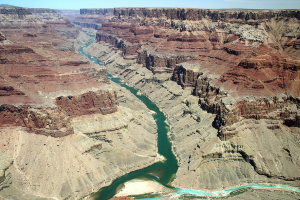

About Me

Catchy Title
Moving from Arizona to the Midwest I was fascinated with the different types of landscapes and how we intersect them, this led me on my journey towards environmental science. There I realized that there is a gap in communication between knowledge and understanding and visual and spatial tools were key to bridge that gap. Diving deeper into GIS and communication styles I was able to address many issues within our larger communities.
Now I am passionately using spatial data and visual information to help facilitate communications between more intimate communities. Being a project manager for the Action Mapping Project (AMP) has helped me hone my focus on projects and data collection that focuses on highlighting community and youth voices. Working with the AMP I have coordinated with community and civic leaders to design their data collection programs from creation to testing to implementation and analysis.
As a lifelong learner, I am enrolling in the University of Washington’s Data Visualization certificate program to further improve my skills. I also spend time working on my personal passion projects: gardening, pickling, crafting my library.
Desert Appreciation: Home State, AZ
Arizona Ecoregions
| Legend | Name | Description |
|---|---|---|
| Mojave Basin and Range Ecoregion 79 | Stretching across southeastern California, southern Nevada, southwestern Utah, and northwestern Arizona, Ecoregion 14 is composed of broad basins and scattered mountains that are generally lower, warmer, and drier than those of the Central Basin and Range (13). Its creosotebush-dominated shrub community is distinct from the saltbush–greasewood and sagebrush–grass communities that occur to the north in the Central Basin and Range (13) and Northern Basin and Range (80); it also differs from the paloverde–cactus shrub and saguaro cactus that occur in the Sonoran Basin and Range (81) to the south. In the Mojave, creosotebush, white bursage, Joshua tree and other yuccas, and blackbrush are typical. On alkali flats, saltbush, saltgrass, alkali sacaton, and iodinebush are found. On mountains, sagebrush, juniper, and singleleaf pinyon occur. At high elevations, some ponderosa pine, white fir, limber pine, and bristlecone pine can be found. The basin soils are mostly Entisols and Aridisols that typically have a thermic temperature regime; they are warmer than those of Ecoregion 13 to the north. Heavy use of off-road vehicles and motorcycles in some areas has made the soils susceptible to wind- and water-erosion. Most of Ecoregion 14 is federally owned and grazing is constrained by the lack of water and forage for livestock. | |
| Colorado Plateau Ecoregion 20 | The Arizona/New Mexico Mountains are distinguished from neighboring mountainous ecoregions by their lower elevations and an associated vegetation indicative of drier, warmer environments, due in part to the region’s more southerly location. Forests of spruce, fir, and Douglas-fir, common in the Southern Rockies (21) and the Wasatch and Uinta Mountains (19), are only found in limited areas at the highest elevations in this region. Chaparral is common at lower elevations in some areas, pinyon-juniper and oak woodlands occur at lower and middle elevations, and the higher elevations are mostly covered with open to dense ponderosa pine forests. These mountains are the northern extent of some Mexican plant and animal species. Surrounded by deserts or grasslands, these mountains in Arizona and New Mexico can be considered biogeographical islands. | |
|  | Arizona and New Mexico Plateau Ecoregion 22 | The Arizona/New Mexico Plateau represents a large transitional region between the drier shrublands and wooded higher relief tablelands of the Colorado Plateaus (20) in the north, the lower, hotter, less vegetated Mojave Basin and Range (14) in the west, the semiarid grasslands of the Southwestern Tablelands (26) to the east, and the forested mountain ecoregions that border the region on the northeast (21) and south (23). Local relief in the region varies from a few feet on plains and mesa tops, to well over 1000 feet along tableland side slopes. The region extends across northern Arizona, northwestern New Mexico, and into the San Luis Valley of Colorado. Gunnison prairie dogs are a keystone species in many of the sagebrush ecosystems and their burrows provide habitat for other wildlife including burrowing owls, weasels, badgers, and a variety of snakes. |
| Arizona and New Mexico Mountians Ecoregion 23 | The Arizona/New Mexico Mountains are distinguished from neighboring mountainous ecoregions by their lower elevations and an associated vegetation indicative of drier, warmer environments, due in part to the region’s more southerly location. Forests of spruce, fir, and Douglas-fir, common in the Southern Rockies (21) and the Wasatch and Uinta Mountains (19), are only found in limited areas at the highest elevations in this region. Chaparral is common at lower elevations in some areas, pinyon-juniper and oak woodlands occur at lower and middle elevations, and the higher elevations are mostly covered with open to dense ponderosa pine forests. These mountains are the northern extent of some Mexican plant and animal species. Surrounded by deserts or grasslands, these mountains in Arizona and New Mexico can be considered biogeographical islands. | |
| Chihuahuan Deserts Ecoregion 24 | This desert ecoregion extends from the Madrean Archipelago (79) in southeast Arizona to the Edwards Plateau (30) in south-central Texas. It is the northern portion of the southernmost desert in North America that extends more than 500 miles south into Mexico. It is generally a continuation of basin and range terrain that is typical of the Mojave Basin and Range (14) and Sonoran Basin and Range (81) ecoregions to the west, although the pattern of alternating mountains and valleys is not as pronounced. The mountain ranges are a geologic mix of Tertiary volcanic and granitic rocks; Paleozoic sedimentary rocks such as sandstone, siltstone, and limestone; and some Precambrian granitic rocks. Outside of the major river drainages, such as the Rio Grande and Pecos River in New Mexico and Texas, the landscape is largely internally drained. Vegetative cover is predominantly desert grassland and arid shrubland, except for high elevation islands of oak, juniper, and pinyon pine woodland. The extent of desert shrubland is increasing across lowlands and mountain foothills due to gradual desertification, caused in part by historical grazing pressure. | |
| Madrean Archipelago Ecoregion 79 | Also known as the Sky Islands in the United States, this is a region of basins and ranges with medium to high local relief, typically 3000 to 5000 feet. Native vegetation in the region is mostly grama-tobosa shrub-steppe in the basins and oak-juniper woodlands on the ranges, except at higher elevations where ponderosa pine is predominant. The region has ecological significance as both a barrier and bridge between two major cordilleras of North America, the Rocky Mountains and the Sierra Madre Occidental. Its exceptional species richness and endemism are also influenced by both western desert and mid-continent prairie biogeography. | |
| Sonoran Basin and Range Ecoregion 81 | Similar in topography to the Mojave Basin and Range to the north, this ecoregion contains scattered low mountains and has large tracts of federally owned lands, a large portion of which are used for military training. However, the Sonoran Basin and Range is slightly hotter than the Mojave and contains large areas of paloverde-cactus shrub and giant saguaro cactus, whereas the potential natural vegetation in the Mojave is largely creosotebush. Other typical Sonoran plants include white bursage, ocotillo, brittlebush, creosotebush, catclaw acacia, cholla, desert saltbush, pricklypear, ironwood, and mesquite. In the region, winter rainfall decreases from west to east, while summer rainfall decreases from east to west. Aridisols and Entisols are dominant with hyperthermic soil temperatures and extremely aridic soil moisture regimes. | |
| Ecoregion descriptions and images from the USGS | ||